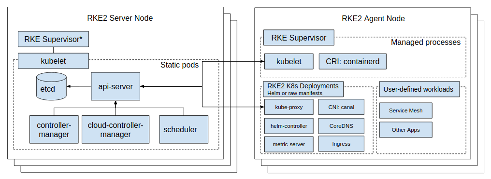

Anatomie einer Next Generation Kubernetes-Distribution
Überblick über die Architektur
Mit RKE2 ziehen wir Lehren aus der Entwicklung und Wartung unserer leichten Kubernetes-Distribution, K3s, und wenden sie an, um eine unternehmensbereite Distribution mit der Benutzerfreundlichkeit von K3s zu erstellen. Was das bedeutet, ist, dass RKE2, einfach ausgedrückt, ein einzelnes Binary ist, das auf allen Knoten installiert und konfiguriert werden soll, die am Kubernetes-Cluster teilnehmen sollen. Sobald RKE2 gestartet ist, kann es dann rollenangemessene Agenten pro Knoten neu starten und überwachen, während es benötigte Inhalte aus dem Netzwerk bezieht.

RKE2 vereint eine Reihe von Open Source-Technologien, um dies alles zum Laufen zu bringen:
Alle diese, außer Traefik, sind kompiliert und statisch mit Go+BoringCrypto verlinkt.
Prozess-Lebenszyklus
Inhalts-Neustart
RKE2 bezieht Binärdateien und Manifeste, um sowohl Server als auch Agent Knoten aus dem RKE2 Laufzeit-Image auszuführen.
Das bedeutet, dass RKE2 standardmäßig /var/lib/rancher/rke2/agent/images/*.tar nach dem rancher/rke2-runtime Image (mit einem Tag, der mit der Ausgabe von rke2 --version korreliert) durchsucht und, wenn es nicht gefunden werden kann, versucht, es aus dem Netzwerk zu ziehen (a.k.a. Docker Hub). RKE2 extrahiert dann /bin/ aus dem Image und flatten es in /var/lib/rancher/rke2/data/$<rke2_data_key>/bin, wobei $<rke2_data_key> eine eindeutige Zeichenfolge darstellt, die das Image identifiziert.
Damit RKE2 wie erwartet funktioniert, muss das Laufzeit-Image mindestens Folgendes bereitstellen:
-
containerd(das CRI) -
containerd-shim(Shims umhüllenruncAufgaben und beenden nicht, wenncontainerddies tut) -
containerd-shim-runc-v1 -
containerd-shim-runc-v2 -
kubelet(der Kubernetes-Knoten-Agent) -
runc(die OCI-Laufzeit)
Die folgenden Ops-Tools werden ebenfalls vom Laufzeit-Image bereitgestellt:
-
ctr(niedrigstufigecontainerdWartung und Inspektion) -
crictl(niedrigstufige CRI-Wartung und Inspektion) -
kubectl(Wartung und Inspektion des Kubernetes-Clusters) -
socat(benötigt voncontainerdfür Port-Forwarding)
Nachdem die Binärdateien extrahiert wurden, wird RKE2 dann Charts aus dem Image in das /var/lib/rancher/rke2/server/manifests-Verzeichnis extrahieren.
Server initialisieren
Im eingebetteten K3s-Engine sind Server spezialisierte Agent-Prozesse, was bedeutet, dass der folgende Start bis zum Start der Node-Container-Laufzeit verschoben wird.
Komponenten vorbereiten
kube-apiserver
Ziehen Sie das kube-apiserver-Image, falls es noch nicht vorhanden ist, und starten Sie eine Goroutine, um auf etcd zu warten und dann die statische Pod-Definition in /var/lib/rancher/rke2/agent/pod-manifests/ zu schreiben.
Cluster starten
Starten Sie einen HTTP-Server in einer Goroutine, um auf andere Cluster-Server/Agenten zu hören, und initialisieren/treten Sie dem Cluster bei.
Agent initialisieren
Der Einstiegspunkt des Agent-Prozesses. Für Server-Prozesse ruft die eingebettete K3s-Engine dies direkt auf.
Node-Agent
kubelet
Starten und überwachen Sie den kubelet-Prozess. Wenn kubelet beendet wird, wird rke2 versuchen, ihn neu zu starten.
Sobald das kubelet läuft, wird es alle verfügbaren statischen Pods starten. Für Server bedeutet dies, dass etcd und kube-apiserver nacheinander gestartet werden, sodass die verbleibenden Komponenten, die über den statischen Pod gestartet wurden, sich mit dem kube-apiserver verbinden und mit ihrer Verarbeitung beginnen können.
Server-Diagramme
Auf Serverknoten kann das helm-controller nun alle in /var/lib/rancher/rke2/server/manifests gefundenen Diagramme auf den Cluster anwenden.
-
rke2-canal.yaml oder rke2-cilium.yaml oder rke2-calico.yaml oder rke2-flannel.yaml oder rke2-multus.yaml (DaemonSet, neu starten)
-
rke2-coredns.yaml (Implementierung, neu starten)
-
rke2-ingress-nginx.yaml and/or rke2-traefik.yaml and rke2-traefik-crd.yaml (deployment)
-
rke2-metrics-server.yaml (deployment)
-
rke2-runtimeclasses.yaml (deployment)
-
rke2-snapshot-controller-crd.yaml, rke2-snapshot-controller.yaml und rke2-snapshot-validation-webhook.yaml (Implementierung)